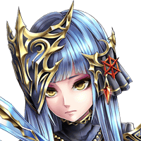
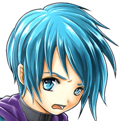

クランツ
俺たち全員集まったんだ。 お前なんか敵じゃない！！
リベラ
どんなことがあっても、 私たちは負けないんだから！！
グリフ
俺がいない間、教え子たちを 随分かわいがってくれたようだな…。
クランツ
でも、イシュグリアに来る時に、 俺たちが通ったものとは、だいぶ違う……。
ロア
あの時、俺たちが通ってきたのは、 ある程度安定した状態のものだ。
ロア
察するに、あれは俺たちの戦闘の余波で 突発的にできたものだ。
ロア
安定してねーから、 おそらくすぐに閉じちまうだろうよ。


アイリス
………！！
アイリス
見て…。 開いた穴の向こうの風景、あれって…。
カフカ
ランドール…？ いえ、ランドールに間違いないわ！！
グリフ
あそこに飛び込んでも、確実にエルガイアに 戻れるという保証はどこにもない…。
グリフ
だが、こんな機会は、 おそらく２度とあるまい…。
クランツ
はい！俺たちにはイシュグリアの情報を 召喚院に届ける使命がありますからね！
ロア
だな。こんな荒んだ場所に 長居してもしゃーねーしな。
リベラ
私も賛成です。帰れる可能性が僅かでも あるならば、そこに賭けるべきです！
カフカ
フフッ、私は賭け事には強いほうだからね。 きっと大丈夫さ！
アイリス
反対する理由は…ないわ。 こんなところで、グズグズしてられないしね
ミーファ
グリフさんたちと一緒なら、 きっと切り抜けられますから！
ミーファ
グリフさん、クランツさん、リベラさん、 ロアさん、カフカさん、アイリスさん……
ミーファ
この時間の俺よ…。 今の俺のようには…なるなよ。
ミーファ
俺の身体は今のところ消えたりはしてない。
ミーファ
お前の目的は、今この瞬間の俺がどうなるか 観察することだったのだろう？
ミーファ
過去に戻って、己の手で自らの成り立ちを 否定したこの俺が。
アム＝ユノス
アハハ、やっぱり気づいていたかい。 まあその通りだよ。
アム＝ユノス
自分で試すわけにもいかないことだし 君はまさに格好の素材だったよ。
アム＝ユノス
おかげで世界と時間の謎を さらに知ることができた。
アム＝ユノス
まあ、君としては、自分の過去が変わって、 消えた方がよかったのかもしれないけどね。
ミーファ
あの人たちが救えたという 事実があるだけで、俺は…満足だ。
アム＝ユノス
ふーん…。 ま、ボクには分からない感情だね。
ミーファ
それよりも、 最後のあれはどういうつもりだ？
アム＝ユノス
一時的に君に力を貸したけど、 ボクはイシュグリアの魔神。人間の敵だよ。
ミーファ
貴様のような魔神が、なぜグリフさんたちの エルガイア帰還に助力したのかということだ
ミーファ
貴様ならグリフさんたちを一瞬で葬る力を、 あの魔獣に与えることもできたはずだ。
ミーファ
ゲートが開いたのは、貴様の“調節”に よってなされたことだ。違うか？
アム＝ユノス
……ま、バレちゃったら しかたがないね。
アム＝ユノス
彼らにあのままイシュグリアにいられたら、
アム＝ユノス
あのミーファ君が、君になっちゃう可能性が 残っちゃうからね。
アム＝ユノス
最後の一押しとして、ちょっと乱暴な方法を 取らせてもらったわけさ。
アム＝ユノス
このイシュグリアには、いろんなところに 無数にゲートがあるみたいだけど、
アム＝ユノス
次元を渡ることに関してはボクは専門外で、 それらの場所を知らないからねー。
アム＝ユノス
あとはまあ、彼らのこと、 ちょっと気に入ったからサービスかな。
ミーファ
気に入った…だと！？ 魔神の貴様が、人間をか？
アム＝ユノス
やだなー。ボクからしたら、 魔神も人間もそんなに大差ない存在さ。
アム＝ユノス
ボクが見ている時の流れの中では、 わずかな誤差程度のものでしかないよ。
アム＝ユノス
アハハ、褒め言葉として受け取っておくよ。
アム＝ユノス
事が終わったら君が本来の時に戻るよう、 ボクが仕込んでおいたものだから。
アム＝ユノス
君にこの時代に居続けられても、 それはそれで面倒なことになるからね。
ミーファ
俺にグリフさんやクランツさんたちを救う 機会をくれたことに感謝する。
アム＝ユノス
他人にお礼を言われたのは何百年ぶりだね。 ま、悪い気はしないさ。
アム＝ユノス
さて、あの召喚師くんたちが帰還しても、 時の流れの大筋は変わらないから、
アム＝ユノス
次にイシュグリアが騒がしくなるのは もうちょっと先になるんだよね。
アム＝ユノス
でも、次の騒動では イシュグリアはもちろん
アム＝ユノス
ボクの運命もメチャクチャに なっちゃうんだよね。楽しみー！！
リント
魔神の１人を使うなんて、 なかなか大胆なことをするね。
ノエル
実際、アム＝ユノスはイシュグリア先遣隊を 監視していたみたいだからね。
ノエル
あの時、アイツが本格介入していたら どうなったのか？…と思ってね。
ノエル
まあ、あの魔神は不確定要素が多すぎて、 その行動はボクにも予測つかなかったから、
ノエル
どんな展開になるのか、 正直ちょっと冷々ものだったけどね。
リント
そういえば、君の親族が出てきたじゃないか 感想はどうだい？
ノエル
会ったこともない、はるか昔の人物じゃ 何の感情も抱きようがないよ。
ノエル
ま、擬似ユニット技術の基礎を作った人物 としては、尊敬しているよ。

ノエル
ただ、あの言動と服装のセンスは、 まったく尊敬できないけどね。